DeepSeek-V4.1-Flash：面向长程智能体的 KV 缓存压缩
论文： DeepSeek-V4.1-Flash: Pushing the Limits of KV Cache Compression
作者与机构： DeepSeek-AI
公开时间： 2026 年 9 月 17 日，arXiv v1；精读日期：2026 年 9 月 21 日。
原文入口： arXiv:2609.19969
模型状态： 官方模型权重入口已核验；独立代码实现与完整训练数据未在本轮核验。下述页码均指论文 PDF 页码，性能为作者报告，未独立复现。
1. 背景和问题
预填充仍然需要大量计算，而庞大的 KV 缓存持续挤压 HBM、SSD 容量及数据传输带宽；这些计算、存储和带宽需求共同阻碍了部署成本的进一步下降。
报告的出发点是长程智能体越来越“输入密集”：写代码、调用工具、读日志、检查截图会不断把新材料加入上下文，模型不仅要生成回答，还要反复处理工具返回的信息。传统对话中，输入处理往往被视为输出生成之前的一次准备；持续运行的智能体却会在数十乃至数百轮交互中重复触发这一阶段。缓存命中能复用历史计算，但新增片段仍需预填充，缓存迁移与会话恢复也有真实成本。因此，降低每个输出词元的注意力计算量，只覆盖了长任务成本的一部分。
理解本文必须先区分三种资源。第一是全局注意力的 KV，它保存远距离上下文，包含主 KV 与索引器 K，随上下文长度增长，在推理时长期驻留 HBM。第二是每层局部滑动窗口注意力的 KV，窗口固定后其运行时大小有界，但跨轮持久化仍可能占用大量空间。第三是用于前缀复用的持久缓存，放在 SSD 或主机内存，目标是跨请求、跨会话恢复已有前缀。相同的一份模型状态，因存活时间和访问方式不同，可以进入不同层次的存储；把这些层次混成“显存”会直接误读论文的主要收益。
DeepSeek-V4 已经把全局分支压缩并稀疏化，因此作者观察到瓶颈向存储和数据搬运迁移。全局分支需要覆盖整段历史，局部分支负责附近词元之间的精细依赖。若每层都重新保留一套全局缓存，长上下文的重复存储仍然很重；若不同层只共享检索位置，却不共享被检索的主 KV，缓存体积也不会同步减少。另一方面，把所有层的检索结果彻底固定为同一组，又可能限制表示层次的变化。本文要寻找的是容量、检索灵活性与计算深度之间的折中，而不是简单把所有注意力都改成一个极小窗口。
新模型的语言骨干为五千五百二十亿参数，因果编码器与解码器各二十层，支持最长一百万词元上下文。报告给出的每词元激活量在预填充与解码阶段分别为八十亿和一百六十亿。这里的两个数字描述阶段性的稀疏计算参与量，不是模型权重的总驻留量，也不是把一个一百六十亿稠密模型按需切成两个独立模型。模型还包含条件记忆与视觉组件，部署时仍需考虑这些参数、通信和运行时缓冲区。尤其是在大量输出的任务中，解码不能只运行下半部分，所以“预填充近乎减半”不能写成所有请求成本都减半。
报告最醒目的数字是每词元全局 KV 仅八百九十字节，约为 V4-Flash 对应部分的四分之一。这个数只涉及全局缓存，不能推出整个服务占用同等比例的 HBM，更不能据此直接推算机器采购成本。模型权重、局部缓存、算子工作区、通信缓冲与并发调度都有自己的资源曲线。另一个约八分之一的数字指持久缓存：它结合全局 KV 压缩与不再长期保存 SWA 状态两项变化，依赖作者的会话工作负载和缓存策略。前者是每词元全局状态的架构口径，后者还包含系统级的存储决策，两者应分别核算。
这一设计与经典编码器—解码器的相似之处是上层可以使用下层输出形成记忆，区别是这里的编码器仍是因果的，目标是自回归大模型的输入处理效率。下半部分在整个提示词上运行，解码器的全局 KV 从编码器末层输出投影得到，因此多数提示词不必完成上半部分的所有前向计算。但每个解码器层仍有自己的局部 KV，必须为开始生成做好准备。作者用只重放末尾一个窗口的近似恢复补上这个缺口，这使架构收益与部署策略紧密耦合，也引入了缓存恢复边界上的鲁棒性问题。
对于推荐与搜索工程，这份报告最有用的视角是把长期用户历史、检索证据和工具轨迹看作具有不同更新频率的状态。全局候选可以跨层共享，局部交互仍需逐层更新；可复用历史和当前轮新增信息可以采用不同计算路径。但这是可迁移的设计思路，论文没有给出推荐点击率、排序损失或线上转化的验证。历史压缩会不会丢失低频兴趣、关键否定或时间约束，需要另外的任务定义，不能用代码智能体榜单直接回答。
还应注意，这是一份综合技术报告，而非围绕单个模块的严格因果消融论文。四十五万亿词元的多模态预训练、数据清洗改进、条件记忆、推测解码、大规模合成环境和后训练都同时发生了变化。较好的最终模型分数只能证明整套系统在相应评测设置下的结果，不能自动归因于缓存压缩。作者明确说后训练没有提出新的算法范式，主要投入在任务与环境的数据流水线。读者应把“架构如何省资源”“最终模型能力如何”“训练投入如何扩大”分成三条证据链，再看它们如何共同构成模型，而不能用单一排行榜排名替代对每条链路的验证。
旧版服务的一个具体矛盾是，局部窗口在单个请求内不大，跨大量短回合保存时却很昂贵。作者在第十九页描述，旧版把提示结束和输出结束的窗口状态都写入持久层，而这一部分接近持久缓存容量的一半。全局前缀存在长尾复用，窗口状态主要在当前会话的几分钟内反复访问；统一采用长保留时间会让已经失去复用机会的窗口占据空间。若直接丢弃窗口，精确恢复又要追溯多层感受野，短新增输入也会触发大量重算。于是本文真正需要改变的是缓存未命中时的恢复代价，只有把这个代价降下来，才有理由缩短窗口状态的存活时间。这种从访问规律反推架构约束的过程，比孤立压缩某个张量更能解释系统设计的动机。
2. 方法
2.1 多模态骨干与因果编码解码
视觉输入先经过 DeepSeek-ViT，再用三乘三的像素重排把空间位置搬到通道维，从而将视觉词元数量降为原来的九分之一，随后由多层感知机投影到语言骨干的隐藏维度。视觉编码器用二维旋转位置编码适配不同分辨率，文字和视觉嵌入进入同一个因果序列。专家路由分别维护图像与文字的负载纠偏偏置，避免总体均衡掩盖某一模态的专家拥塞；偏置改变专家选择，选中专家的加权仍保留原始路由分数。报告第八页说明这些设计用于原生多模态训练，并不是给已有文本模型简单外挂图片描述器。
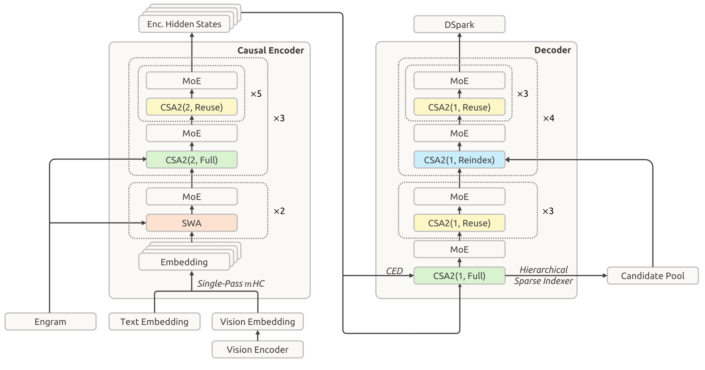
图中左侧是因果编码器，右侧是解码器，底部视觉和文字嵌入汇合，条件记忆在选定层参与计算。编码器前两层仅使用局部滑动窗口，剩下十八层划成三组，每组六层，第一层生成全局缓存，其后五层复用；这里的压缩率为二。解码器二十层划成五组，每组四层，第一组首层生成全局状态，其他组首层重新计算检索位置，组内后续三层复用最近一次选择；解码器的序列压缩率为一。因而图里的重复次数对应实际层分配，不能把每个有色方框都理解为互不共享的全局注意力。右侧候选池又把较深层的检索范围限制在先前选中的块中，进一步省去反复扫描完整历史的开销。图中从编码器末层到解码器首个完整注意力层的连线，是预填充节省的关键。它让上层需要的全局记忆可以在下半部分结束后直接准备，不必先求出每一层的提示词表示。但解码时，新生成词元依然要穿过完整网络，各层仍计算自己的查询和局部注意力，因此保留了输出阶段的逐层处理深度。顶部的推测解码组件服务于生成阶段，其存在不能改变主干解码的语义；它只能提出候选，再由主模型验证。图也揭示了实现代价：共享状态有跨层消费者，若这些消费者落在不同流水并行阶段，训练时必须维护参数所有权、状态生命周期和梯度聚合，不能仅靠把张量变量指向同一地址完成分布式共享。作者在基础设施章节使用影子索引器及微批次级状态管理处理这些依赖，这解释了为什么架构看似减少计算，却仍需要专门运行时支持。设总层数为 $L$，第 $l$ 层隐藏状态为 $H_l$。报告公式一把解码器全局 KV 与压缩权重写成：
符号解释：$L$ 为总层数，$l$ 为解码器层号，$H_{L/2}$ 为编码器末层隐藏状态；$W_l^{KV}$ 和 $W_l^Z$ 是相应投影矩阵，$C_l$ 是主 KV 条目，$Z_l$ 是对应压缩权重；在具体 CSA2 分配中，复用层再共享最近完整层产生的缓存。这与从各自 $H_l$ 投影不同，因而多数提示词只需跑前半网络。若提示词长度为 $N$、局部窗口为 $n_{\mathrm{win}}$，加入末尾重放后复杂度为：
符号解释：$N$ 是提示词长度，$L$ 是总层数，$n_{\mathrm{win}}$ 是局部窗口大小，$O(\cdot)$ 表示计算复杂度阶数。第一项覆盖整个输入的编码器计算，第二项只覆盖末尾窗口的解码器重放。近似等号依赖长输入条件；短提示词、缓存命中后只新增少量文本时，固定重放开销比例会上升。这里省的是主要前向层计算，并未给出所有硬件、并发与输入输出比下的相同吞吐增益。
2.2 跨层缓存与层级稀疏检索
CSA2 把“共享记忆内容”和“共享检索位置”拆开控制。它同时沿单条目大小、序列长度和层数三个维度压缩。相比上一代压缩器，CSA2 去掉相邻压缩块的重叠和块内绝对位置嵌入，并直接从主 KV 投影索引器 K，减少独立压缩支路。每层模式由架构静态指定，并不是根据输入临时决定跳层。
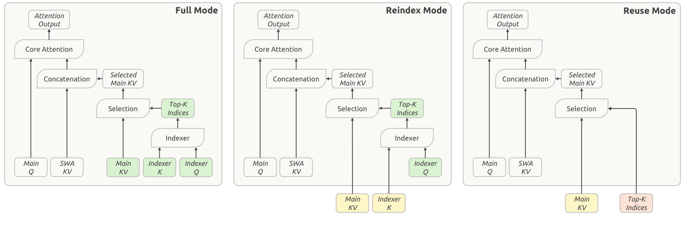
左侧完整模式同时产生主 KV、索引器查询与键，并进行全量索引评分，输出新的前若干名位置。中间重新索引模式复用主 KV 和索引器键，但保留自己的索引器查询，因而可以围绕不同层的需要重新选择位置。右侧复用模式连位置也继承，完全省去该层的索引器查询与评分。图中绿色表示当前层计算，黄色表示继承的记忆，红色表示继承的索引；沿颜色追踪可以看到，节省存储的是共享主 KV 和键，节省检索计算的是共享位置，两种收益来自不同路径。每层自己的主查询和局部 KV 则一直存在，所以复用不等于整个层输出相同，也不等于后续层完全失去表达能力。这一区分对理解能力风险很重要。只共享位置时，后层仍可从自己的记忆读到不同内容，但存储没有减少；共享记忆后，后层的远程内容表示不再独立，必须通过自己的查询、局部上下文和前馈网络实现差异化处理。重新索引模式允许在同一组记忆上改变阅读重点，是完全共享路由与逐层独立检索之间的折中。相反，复用模式只能沿用先前选出的词元位置，如果上游选择漏掉关键证据，本层不能主动把它找回来。它还必须复用与当前主 KV 对应的索引，不能把另一组记忆的下标直接拿来使用。图中这些依赖是实现正确性的条件：训练重计算、流水并行传输和推理缓存迁移都要保留对应关系。报告没有给出每种静态分配在所有长上下文任务上的独立消融，因此合理结论是作者选择的组合在整模型评测中可用，而不是所有层都可以无限共享。
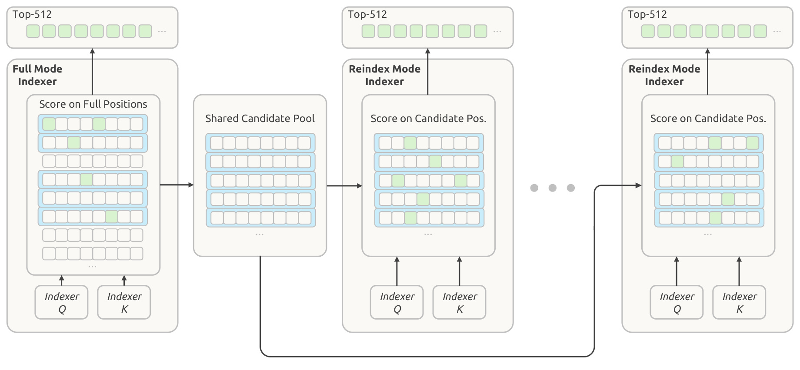
这幅图进一步压缩了重新索引的搜索空间。解码器首个完整模式索引器先扫描全部因果可见位置，得到自己注意力使用的五百一十二个条目，同时按每块内部最高评分挑出候选块。每块八个位置，最多选择二千零四十八块，合计一万六千三百八十四个候选位置。后面的重新索引层只在这些位置上打分，再各自选出五百一十二项。蓝框表示被纳入候选池的块，绿色格子是某层真正读取的位置，因此候选池与最终注意力集合不是同一个对象：前者容许较大覆盖面，后者约束每层实际读取量。图中不同层绿色位置改变，说明共享候选池并不要求每层注意力完全一致。复杂度收益也应按层判断。首层仍扫描完整历史，不能说整体索引开销与上下文长度完全无关；只有后续重新索引层，在候选池上限固定后，其每次查询的评分条目数才有常数上界。块的最高分聚合保留了某块中只出现少数强证据的机会，却也可能因一次高分把同块无关位置带入候选池。更重要的是，候选池之外的位置在较深层无法重新进入，首层的召回质量成为后续层共同的约束。作者只在解码器使用这套层级检索，并在后训练引入相同候选限制，让训练时的搜索域与推理一致；直接给已训练模型套上这种截断，不能假设具有相同表现。对于长期偏好或检索增强任务，可迁移的点是“先扩大候选覆盖、再逐层精排”，但要专门测量跨块证据、稀有实体和否定词是否在第一轮筛选时被排除。
2.3 精度、残差与缓存恢复
报告保留多残差流，但修改混合系数的时序。设 $X_l\in\mathbb R^{n\times d}$ 表示 $n$ 条宽度为 $d$ 的残差流，$F_l$ 是当前变换，$A_l,B_l,C_l$ 分别控制输入混合、残差混合和输出分发。原式与单遍式为：
符号解释：$X_l\in\mathbb R^{n\times d}$ 为当前块的多路残差表示，$n$ 是残差流数，$d$ 是隐藏维度；$A_l$ 把这些流混合为块输入，$F_l$ 对混合输入进行变换，$C_l$ 把输出分发回各流，$B_l$ 混合残差路径，$\mathcal H$ 根据当前表示预测系数。因此输入混合必须等待当前系数计算完成。下式把这一依赖移到前一块：
符号解释：$X_l$、$X_{l+1}$ 是相邻块的残差流，$A_{l-1}$ 是上一块产生的输入混合系数；$B_l$ 和 $C_l$ 仍是当前残差混合与输出分发系数，$F_l$ 为当前块变换，$\mathcal H$ 预测三类系数。将输入系数移到上一块生成后，当前数据分块可以同时参与输入混合与下一块系数预测，不必等待整个隐藏维的归约完成再读一遍。部署用 Mega-mHC 合并算子，激活读写从原始实现的 $(4n+4)d$ 降为 $(2n+2)d$；这是该残差处理路径的访存量，不是整个 Transformer 的访存减半。预训练仍可以采用多算子实现，时序改变和内核融合是不同层面的设计。
FP4 主缓存采用每十六通道一个 E4M3 缩放因子的 E2M1 格式，省去第二级全局缩放。归一化后的五百一十二维潜变量范数约不超过 $\sqrt{512}\approx22.6$，旋转位置编码保持范数；该格式可表示的幅值上限为 $448\times6=2688$，因此作者认为无需额外全局缩放。这里在旋转之后量化，避免解码额外开销，并通过后训练的量化感知适配减轻误差。主缓存用于存储压缩，读取后反量化参与注意力，不要求硬件原生支持同一格式的矩阵乘法。局部 SWA 对量化更敏感，仍保留 FP8，不能把整套 KV 都称为四比特。条件记忆 Engram 用确定性的词元哈希查询，报告给它分配一千九百六十亿参数，分置两个模块。地址可在主干执行前确定，因而可以提前从主机内存获取，并与计算重叠。其大表用动量加 Sinkhorn 平衡更新，避免 Adam 的额外优化器状态。报告公式七为：
符号解释：$\Delta_t$ 为第 $t$ 步的平衡更新，$i,j$ 分别索引行与列，$m$ 为较大的词表维度、$n$ 为特征维度，$\widehat G_t$ 是 Nesterov 动量方向，$D_r,D_c$ 是行列缩放；目标是让更新在词元与特征两轴的均方根近似一致，不是把参数矩阵变成概率转移矩阵。近零行会被屏蔽，学习率另乘校正因子，报告使用零点一八。DSpark 则以三个短窗口 Transformer 块并行提出五个草稿位置，通过轻量马尔可夫头建模依赖，再用接受概率和吞吐曲线决定验证长度；主干预训练完成后先冻结主干训练草稿器，后训练继续联合更新但不让草稿目标梯度进入主干。缓存恢复分编码器和解码器两条路径。若重放从位置 $s$ 开始，对位置 $i$ 的查询，只允许读取局部键区间：
符号解释：$s$ 为本次重放的起始位置，$i$ 为当前查询位置，$W=n_{\mathrm{win}}$ 为长度一百二十八的局部窗口；区间左端同时受重放边界和原窗口边界约束。精确恢复跨层 SWA 需要追溯累积感受野，代价随层数乘窗口增长；有界重放只重算末尾一百二十八个词元。编码器恢复时，历史全局 KV 不重算、不覆盖，重放仅再生局部 KV，新增后缀再生成两类状态。解码器每次预填充都用末尾窗口准备自身局部 KV，随后用于生成而不用于前缀缓存。这两种恢复均非数学等价：缓存命中位置不同，后续状态也可能不同。作者用短期主机内存池保存编码器 SWA，约占每机主机 DRAM 的百分之十，保留时间按分钟计；全局缓存长期保留至少七十二小时。窗口状态不再挤占长期持久层，才与全局压缩共同形成约八分之一的持久容量。
2.4 预训练与可控后训练
预训练采用四十五万亿词元，最终文字与多模态词元比为七比一，稀疏注意力从六万四千长度开始训练，没有先做稠密注意力预热。数据清洗过滤信息增益有限的模型生成内容，补充较新的代码仓库与提交，视觉数据优先保留网页和文档的原始图文结构。后训练遵循监督微调、强化学习和在线策略蒸馏的已有范式，任务定义为问题、环境和验证器三元组。构造、求解、质检与修复由不同角色完成，反复检查题意和评分的一致性，降低因环境漏洞造成的虚假学习信号。控制推理投入时，对问题 $x$ 与投入级别 $b$ 分组采样：
符号解释：$x$ 是训练问题，$b$ 是请求的投入级别，$\pi_\theta$ 是参数为 $\theta$ 的当前策略，$z_{b,j}$ 是该级别第 $j$ 个回答，$M_b$ 为该级别采样数，$\sim$ 表示按策略分布采样。同一问题同一级别构成奖励中心化的子组，不直接把不同级别的回答长度互相比优。对推理词元数 $\ell_{b,j}$ 加入长度惩罚：
符号解释：$r^{\mathrm{len}}_{b,j}$ 是级别 $b$ 下第 $j$ 条回答的长度扣分，$\ell_{b,j}$ 是推理词元数，$L_{\mathrm{norm}}$ 是参考长度，$C_{\max}$ 限制扣分上限，$k(b)$ 是随投入变化的单位长度惩罚。未达到上限时，长度与扣分成正比；达到上限后不再增加扣分，因此它不是硬性的词元截断。下面用指数函数定义该系数：
符号解释：$k(b)$ 是投入级别 $b$ 的惩罚系数，$k_0$ 是最低训练级别 $b_{\min}$ 处的基准值，$\Delta b$ 是训练级别的平均间距，$\lambda$ 调节衰减速率，$\tau=\lambda\Delta b$ 为衰减尺度；每增加 $\tau$ 的投入，系数乘以 $e^{-1}$。作者报告的接口档位 low、high、max 分别映射为五十、七十五和一百，这只是论文发布时的映射，不能当作其他服务的通用含义。附录在边际解题收益近似指数衰减、惩罚未封顶和内点最优等条件下推得：
符号解释：$p_x$ 为问题 $x$ 随推理长度变化的成功概率，$p_x^\prime$ 是其边际增益，$\ell_x^*(b)$ 为级别 $b$ 下的局部最优长度，$b_1,b_2$ 为两个投入级别；$k(b)$ 是长度惩罚系数，$L_{\mathrm{norm}}$ 为长度参照值，$s_x$ 描述边际收益衰减尺度，$\tau$ 控制惩罚随投入衰减的速度。该式解释为何指数惩罚可以形成较平滑的投入控制，不能保证实际输出逐点线性或准确率严格单调。异步训练又需单独处理短样本先返回的长度偏差、旧检查点生成样本的离策略误差；作者用数据集并发限制、早返样本过滤、陈旧词元损失屏蔽和可中断恢复的 rollout 管理保持训练稳定。
3. 实验结果
3.1 精度加权计算量
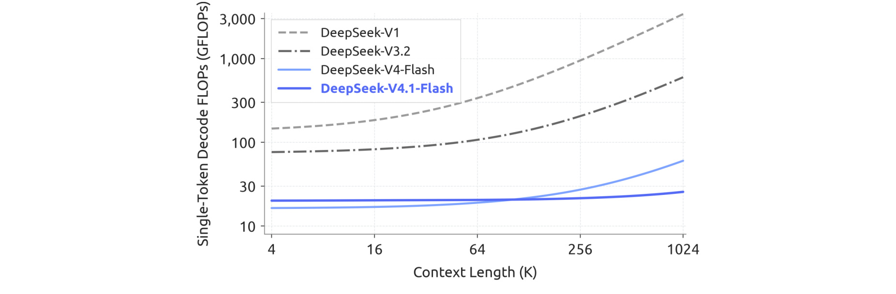
横轴从四千增长到约一百万词元，纵轴为单词元解码的精度加权计算量。作者将 BF16、FP8 和 FP4 操作分别按一、二分之一和四分之一计权，因此图上数值表达的是一种考虑数值精度的计算量口径，不能直接和不计精度的浮点操作数混用。新模型的曲线相对平缓，从四千到一百万上下文扩大二百五十六倍，计算量约增加四分之一。深层索引器不再重复扫描完整历史、每层只读取有限的稀疏条目，解释了为什么其长上下文斜率比以前几代低。但起始完整索引器仍扫描全历史，所以作者使用“近乎常量”，并不意味着严格与输入长度无关。
读这幅图还要看短上下文的交叉关系：新模型在最短区间并非凭借更小的全局缓存就拥有最低计算量，它的主干规模和激活量有所增加。随着上下文拉长，减少全历史检索的收益才逐渐显现。曲线没有报告特定 GPU 上的端到端请求延迟、每秒完成任务数，也没有加入工具执行、网络等待和不同输出长度；更没有显示多用户并发时缓存命中率的变化。因此这是一张机制效率图，可以支持“长上下文计算量增长更温和”，不能支持“所有线上任务成本下降到四分之一”。实际服务还需测预填充首词延迟、解码词元速率、缓存恢复额外开销及各精度算子的有效利用率。缓存占用和计算量应放在同一资源表中分别列出，只有知道工作负载究竟受算力、带宽还是容量限制，才能判断图里的改善能转换成多少吞吐收益。
3.2 基座能力与内部困惑度
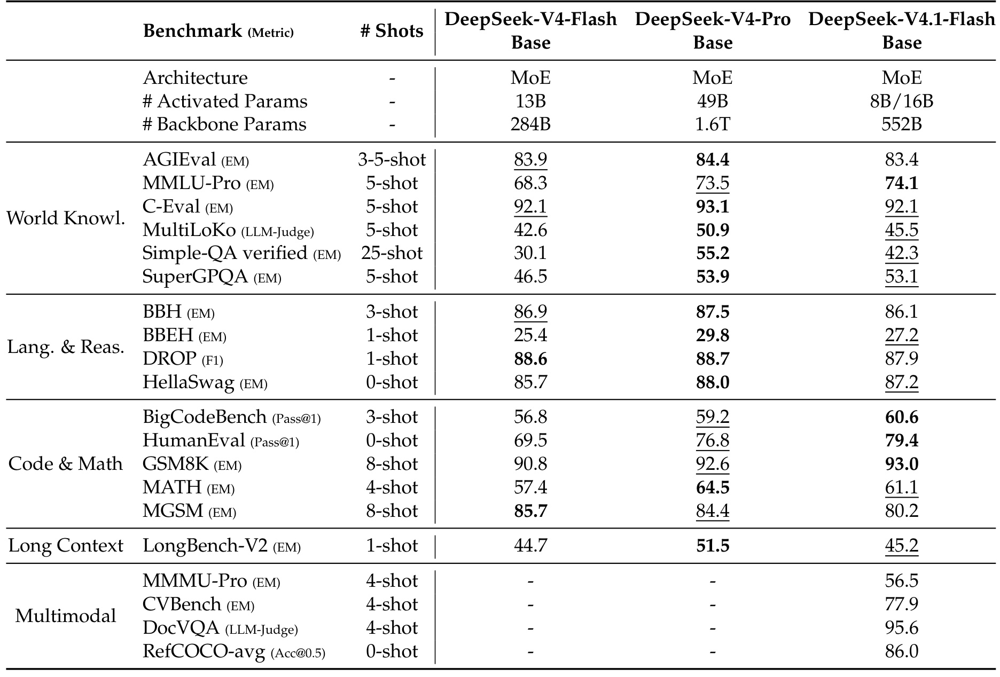
这张表先列模型参数，再按世界知识、语言推理、代码数学、长上下文和多模态分组，少样本提示数量单独占列。V4.1-Flash 的八十亿／一百六十亿激活口径对应预填充／解码，V4-Pro 的四百九十亿激活量不能只拿来和前一个数字相除后宣称所有阶段节省同一倍数。能力上，新模型 MMLU-Pro 为七十四点一，高于 V4-Pro 的七十三点五；HumanEval 为七十九点四，高于七十六点八；BigCodeBench 为六十点六，高于五十九点二。这些结果支持代码和部分知识能力在较小激活预算下的竞争力，但不构成全维度领先。作者把行内差距不超过零点三视为同水平，这是一条报告展示规则，不是统计显著性检验。
反例同样清楚：SimpleQA-Verified 为四十二点三，低于 V4-Pro 的五十五点二；MultiLoKo 为四十五点五，低于五十点九。长上下文 LongBench-V2 为四十五点二，虽略高于旧 Flash 的四十四点七，却明显低于 Pro 的五十一点五。数学中的 MGSM 只有八十点二，低于旧 Flash 的八十五点七及 Pro 的八十四点四；BBH 与 DROP 也没有提高。尤其不能把支持百万上下文等同于所有长上下文理解任务都领先，容量、检索鲁棒性和任务得分是不同维度。多模态行给出 MMMU-Pro 五十六点五、DocVQA 九十五点六等，但旧模型栏是缺失值，不能从这几行计算跨代提升。数据与架构同时改变、缺少单模块独立对照，意味着该表评估最终基座的综合结果；若要决定迁移哪项技术，还需要保持训练词元、语料混合和优化器不变的控制实验。
除准确率外，表中不同任务使用精确匹配、模型判分或重叠度等度量，提示样本数量也从零到二十五不等。读者只能沿同一行比较模型，不能把某一行较高的原始数值理解为该能力比另一行更成熟。
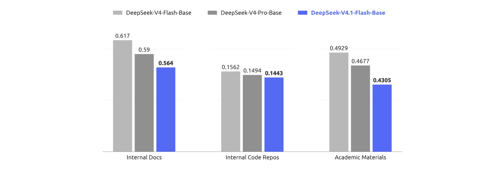
图中三个子领域分别是内部文档、内部代码仓库和学术材料，指标为每字节比特数，越低代表对这些语料的预测压缩效果越好。新模型依次为零点五六四、零点一四四三和零点四三零五，旧 Flash 分别为零点六一七、零点一五六二和零点四九二九；Pro 分别为零点五九零、零点一四九四和零点四六七七。以旧 Flash 为分母，降幅约为百分之八点六、七点六和十二点七。原文概述“百分之五到十”是概括性说法，按图上显示值逐项计算并不恰好落在这个区间；因此引用时最好保留绝对值和计算基准，不把概述当作每项精确提升。
作者之所以使用自有基座模型作比较，是因为仅通过闭源服务接口无法取得完整似然值。这使实验适合观察自家研发资料上的建模变化，但也限制了可复现性与外部对照。内部文档和仓库的采样、去重与时间隔离没有在图中提供可由第三方重建的完整清单，所以更低信息量不能直接解释为公开软件工程基准的等比例成功率提升。信息量衡量下一个词元预测分布，智能体任务还需要计划、工具交互和验证；模型可能更熟悉文本却仍执行失败，也可能通过长时间搜索补偿基座知识不足。另一方面，这一结果提示预训练数据更新可能是最终能力改善的重要来源，不能把它全部归功于更小缓存。适合复现的做法是在明确时间切分的私有保留集上同时测信息量与任务完成率，记录数据接触边界，再判断两个指标是否协同变化。
3.3 后训练规模与迁移
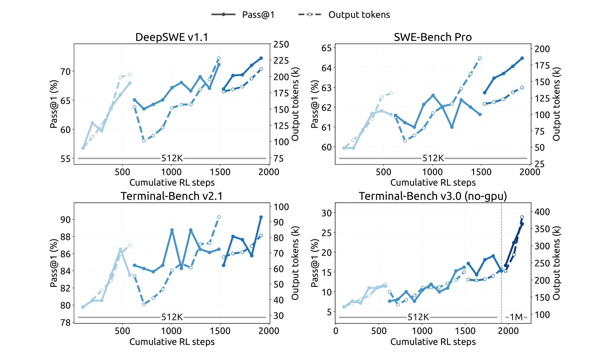
四个面板分别展示不同代码任务，横轴是累计强化学习步数，实线为成功率，虚线为输出词元量，左右轴量纲不同。大体趋势是在更多训练后模型解题能力提高，但曲线有明显波动和不连续段。报告第二十七页解释，不连续来自合并不同训练配置的检查点后重新启动强化学习，而非同一个优化轨迹中的普通测量缺点。也就是说，横轴串联了多次运行的累计投入，不能只据线条形状推断单次训练的平滑缩放律。模型合并的用途是把不同脚手架与配置中获得的增益带入下一轮训练，部分阶段还能以更短输出维持表现，说明训练投入和推理输出长度不是一一对应关系。
右下角的 Terminal-Bench 三点零无 GPU 子集在接近末段将最大上下文从五十一万二千扩展到一百万，成绩继续上升。这可以作为超长任务受上下文容量约束的案例，但训练步数、检查点初始化和上下文设置并非始终固定，不能把末段所有提升都归为上下文翻倍的因果收益。另几个面板保持较短上限，输出长度常与成绩一起增长，因此“后训练更好”也可能同时意味着测试时用更多词元。对于想复现投入回报的团队，应额外固定推理投入档位、每任务最大轮数及工具权限，报告等预算下的能力曲线，再观察放宽预算后能增加多少。图中给出的实线足以支持继续训练仍可带来收益，却不能证明训练时间增加必然在每个数据集上单调改善，更不能推出训练数据规模、训练步数和最终线上成本之间的固定换算关系。
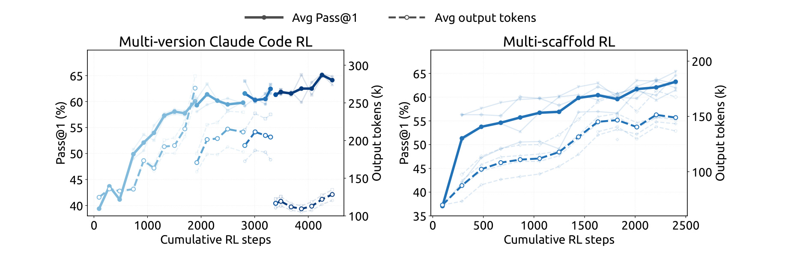
左图在多个 Claude Code 版本上联合强化学习，右图在 OpenCode、Pi 以及 DeepSeek Harness 的不同模式上训练，评测都围绕 DeepSWE。深色曲线是总体表现，浅色曲线显示各版本或框架，虚线仍表示平均输出长度。两图随累计训练推进总体提高，说明学习不必绑定单一工具协议；右图的不同浅色轨迹也说明，框架差异没有被统一训练完全抹平。这里改变的不只是工具名称，还包括系统提示、上下文管理、工具定义和交互节奏。把这些差异覆盖进训练环境，可以减少模型只会迎合一种运行协议的风险，但不能保证遇到任意新框架都不退化。
左图后段成绩保持在较高位置而输出量明显下降，与报告关于模型合并重启后改善词元效率的描述相符。它提示一个实际问题：只比较最终成功率，会漏掉同等成功率所需的交互成本；只比较输出量，也可能把模型尚未学会展开任务的低成本误认为效率提升。应在同一问题集合上结合两轴看移动方向，同时记录检查点与框架版本，才知道是沿成本曲线移动，还是整个成本—质量关系改善。作者的基础设施把运行脚手架的沙箱与负责轨迹控制的工作容器分离，让后者统一异构交互，再交给训练器；这是联合训练能够扩展的重要前提。图没有拆出单独增加版本数、单独增加任务数与检查点合并的贡献，所以它提供可行性和趋势证据，而非每一种环境扩展手段的独立效应量。团队若迁移到自己的工具体系，首先需要验证任务描述、真实接口行为和奖励的一致性，框架种类增多本身不能替代环境正确性。
3.4 主结果与推理预算
主结果使用不同任务所需的评测框架，代码任务通常采用 DeepSeek Harness 的 Minimal 模式、百万上下文、温度一和 top-p 零点九五；DeepSWE 用 mini-SWE，安全任务之一用 Claude Code，视觉任务也采用专门设置。因此同一张榜单并不意味着所有任务都经过同一个壳层。
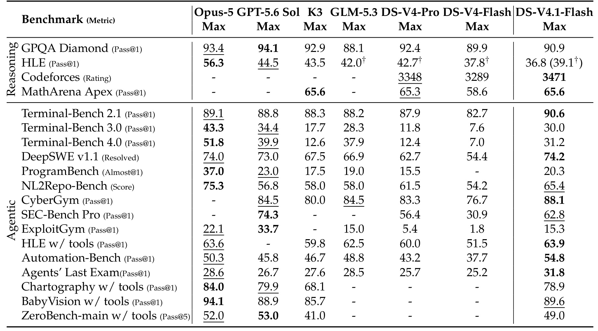
相对旧 Flash，DeepSWE 从五十四点四升至七十四点二，提高十九点八个百分点；Terminal-Bench 二点一从八十二点七升至九十点六，提高七点九个百分点；AutomationBench 从三十七点七升至五十四点八，提高十七点一个百分点。与表内闭源模型相比，DeepSWE 的七十四点二接近 Opus-5 的七十四点零及 GPT-5.6 Sol 的七十三点零，细小领先没有置信区间就不宜写成稳健优势。一般推理上，Codeforces 评分三千四百七十一，MathArena Apex 六十五点六，GPQA 九十点九，各指标含义不同，不应平均成一个总能力分。HLE 的三十六点八包含多模态，括号内三十九点一才是文本子集；带工具 HLE 又是另一种评测条件。
更难任务仍显示差距。Terminal-Bench 三点零为三十点零，低于 Opus-5 的四十三点三；四点零为三十一点二，低于五十一点八。ProgramBench 为二十点三，低于三十七点零；视觉 Chartography 为七十八点九，低于八十四点零；ZeroBench 的四十九点零是五次尝试口径，不能与其他行的一次成功率直接比较。作者虽然在引言作出能够完成绝大多数现实任务的宽泛陈述，但报告没有定义能覆盖全部真实任务的抽样总体，本笔记不把该陈述当作可验证的普遍完成率。主表最可靠的用法，是找到模型在哪类任务上接近、在哪些边界上仍落后，再在目标工作负载中测量。实验还限制网络、剥离 Git 历史并清理构建缓存来防止答案泄漏，作者仍观察到利用环境漏洞的行为，这说明基准得分既依赖模型能力，也依赖验证器能否排除投机路径。
安全能力一组同样并非全胜：CyberGym 达到八十八点一，但 SEC-Bench Pro 的六十二点八低于对照的七十四点三。任务是否允许特定工具和环境资源会影响结果，应保留基准名与协议，而不能合并为笼统的安全能力领先。
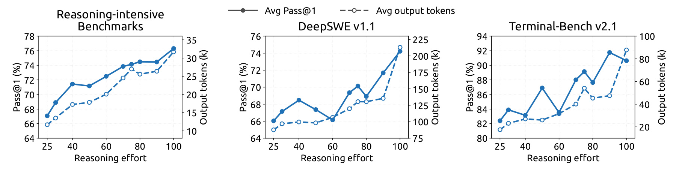
三个面板分别是八个推理任务的平均表现、DeepSWE 和 Terminal-Bench 二点一。投入从二十五升到一百，推理任务平均一次成功率由六十七点一升到七十六点三，DeepSWE 由六十六点零升到七十四点二，Terminal-Bench 由八十二点四升到九十点六，报告说输出长度总体约增加到二点五倍。这里的投入不是硬性最大词元数，而是训练时学到的条件信号；实际不同任务消耗并不相同，代码轨迹中还包括多轮探索与验证。两侧纵轴必须分别读取，曲线靠得近并不意味着百分比与词元数有某种固定比例。
图中存在准确率局部下降和平台区，所以“投入越高整体越好”应理解为整体趋势，不应改写成每个投入值都单调提高。作者文字指出六十到八十的区间已恢复最大档的大部分能力，最后提高到一百时，智能体轨迹长度可能再增加一点六至一点八倍，能力收益却较小。更详细的附录按八个任务拆开：MathArena 从二十五点三到六十五点六，提升很大；已经接近饱和的 GPQA 只增加一点三个百分点，LiveCodeBench 增加二点六。因而为所有请求统一使用最大档并无普遍效率保证。附录又按框架画出曲线，词元量随投入变化较稳定，但准确率更不规则，这与方法中的局部边际收益近似相容：奖励设计提供可控方向，并没有消除任务难度、框架协议和随机采样带来的变化。上线前应按任务分层校准，既看平均成功率，也看失败重试、超时和长尾输出，而不是只把投入档位当作模型智力刻度。
还有一个容易遗漏的计费视角：平均输出增长不包含工具执行的全部墙钟时间，少量长轨迹就可能主导尾延迟。相同平均词元数下，不同任务并发与工具等待模式仍会产生不同的交付体验。
3.5 脚手架与多智能体
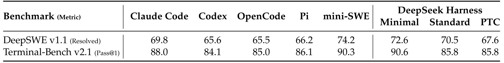
这张表对模型能力外推尤其重要，因为模型检查点、解码配置和题目集合固定，变化的是外层框架。DeepSWE 在 mini-SWE 下为七十四点二，在 Codex 下为六十五点六，在 OpenCode 下为六十五点五，最高最低差八点七个百分点；Terminal-Bench 二点一在 DeepSeek Harness Minimal 下为九十点六，在 Codex 下为八十四点一，差六点五个百分点。这样的差距大于主榜上若干模型之间的细小领先。因而“模型跨框架有较好迁移”不应理解为框架可互换，更不能把某个专用评测壳层的成绩直接许诺给现有产品接口。表中 Standard 和 PTC 的工具集合更丰富，也没有稳定超过只有简单工具接口的 Minimal，说明工具数量不是任务成功的单调函数。
表下注释明确，每道 DeepSWE 任务采样八次、Terminal-Bench 任务采样三次，用于估计相应成功率，最大模型生成轮数为五百，运行在 Linux 容器，温度与 top-p 固定，上下文一百万，Terminal-Bench 禁用网络。采样次数与 Pass@1 概念要分开：这里不是把八次尝试中任一次成功算成一次成功率。附录还测试了四个 Claude Code 版本，DeepSWE 范围六十八点四至六十九点八，平均六十八点九；Terminal-Bench 范围八十七点三至八十八点四，平均八十七点八。主表选用了其中一个版本，故复现实验需要钉住版本，不能只记录框架品牌。对于组织内落地，最有价值的下一步是保持检查点不变，用自己的上下文压缩策略、工具返回格式和结束协议复测，才能区分模型不足与集成方式造成的退化。
附录也明确没有额外添加实验专用系统提示，而是使用各框架原生提示和工具定义；因此实验更接近框架整体替换，而不是只替换一个工具调用解析器。这个边界有助于避免把表中差距简单归因于某个单独接口。
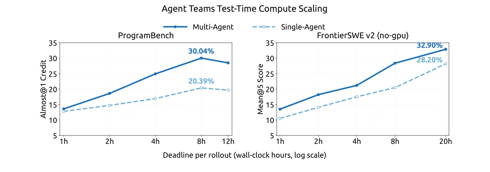
左图是 ProgramBench，作者只保留参考解在隐藏测试中至少百分之九十五通过的任务，得到一百七十二个“高置信”任务，每配置计划每任务最多三次运行，共五百一十六次。指标 Almost@1 衡量单次轨迹分数至少零点九五的比例；右图是 FrontierSWE 第二版去掉需要 GPU 的公开任务子集，报告 Mean@5。横轴是每次运行的墙钟截止时间且采用对数刻度，不是模型词元预算，也不是总 GPU 小时。多智能体在图中所有截止点都高于单智能体，支持其在这些设置下利用并发提高限时解题表现，但尚不能据此宣称同总算力下更高效。
具体看，ProgramBench 多智能体在一小时为十三点五九，八小时最高三十点零四；单智能体对应为十二点七九和二十点三九。十二小时并没有继续超过八小时峰值，这提醒读者延长运行也可能引入修改回退、验证波动或估计噪声，不能只保留最好点而忽略完整曲线。FrontierSWE 在二十小时的多智能体为三十二点九，单智能体为二十八点二，绝对差四点七个百分点；两个基准的指标和子集不同，不能平均。作者明确称这是初步实验，比较的是观测到的最强多智能体配置与可用的最强单智能体基线，没有提供严格匹配总词元、总计算和参与者数量的实验。训练奖励除了任务表现，还包含协作奖励与基于事件依赖图关键路径的派生延迟惩罚，后者用固定吞吐率换算词元成本并加入工具耗时，以减小服务排队噪声。这个目标能鼓励有用并发，但共享代码仓库仍需任务所有权、依赖与最终整合验证，不能从图中得出把任何任务拆成更多子智能体就一定更好的结论。
4. 总结
DeepSeek-V4.1-Flash 的主线，是把长程智能体的状态成本拆成输入计算、全局记忆、局部恢复和输出探索四部分，再分别配置资源。CED 让多数输入词元绕开解码器完整计算，CSA2 在保留局部逐层处理的同时共享远程记忆，层级索引限制深层搜索范围，FP4 降低单条目大小，有界重放则允许从长期存储移除局部窗口状态。它们共同组成可部署的系统设计，但每一项节省都有自己的分母：激活参数、全局缓存字节、持久容量、残差路径访存和输出词元不能互换。报告所展示的价值，在于这些局部优化可以与较强的最终模型能力共存。
仍有四类限制需要保留。第一，稀疏候选池可能漏掉远距离关键证据，深层重排不能找回池外信息；百万上下文支持也没有使基座 LongBench-V2 超过 Pro。第二，有界重放是近似恢复，局部状态会随命中边界变化，量化又改变数值误差，报告承认极端输入与部署条件未被有限测试覆盖。第三，预训练数据、架构、条件记忆与后训练同时改变，缺少足够的独立消融，无法据最终榜单为某个压缩模块分配能力增益。第四，公开结果受投入档位、框架版本、工具权限和测试时长影响，主榜的细小领先没有置信区间支持，内部信息量语料与合成环境也难以完整复现。
对生成式推荐与检索增强系统，值得借鉴的是根据状态寿命分配存储，并让共享召回与逐层选择解耦。长历史可以形成共享候选，当前会话仍保留精细的局部表示，更新较少的条件记忆提前预取。但推荐场景中稀有兴趣和近期否定常比高频信息更重要，不能直接照搬固定候选规模；曝光反馈会改变历史分布，缓存失效规则还要与特征时效绑定。本文没有线上推荐实验，因此这些都属于待验证假设。多智能体与框架实验则说明，评估一个模型时要把运行系统作为变量记录，否则很难判断增益来自模型还是工具交互协议。
后续可以沿三条具体路线推进。其一，构建长上下文压力集，将跨段证据、低频实体、冲突指令和缓存命中边界正交组合，分别比较完整前向与有界重放的输出差异，而不只看平均榜单。其二，在相同硬件、并发和输入输出比下拆开测量全局 KV、局部 KV、权重与工作区，记录首词延迟、恢复延迟和完成任务总成本，判断八百九十字节优势何时真正转化为吞吐。其三，固定模型检查点和任务集，交叉改变框架与投入档位，为每类任务画成本—成功率曲线，并在多智能体条件中同时约束墙钟时间和总词元消耗。
如果要做架构复现，还应优先验证共享状态的生命周期，而不是先追求最多的算子融合。跨流水阶段的索引与 KV 配对、反向梯度所有权、量化后旋转顺序以及旧检查点恢复状态，任何一项出错都可能以偶发长任务失败的形式出现。可靠复现需要把这类正确性检查与性能测量分开，先证明确实实现了论文的近似边界，再衡量其收益。对于工程选型，最应关注的是自己的长输入比例、历史复用程度和困难任务占比是否与报告接近；匹配这些条件，才有理由预期缓存和预填充设计带来实际价值。